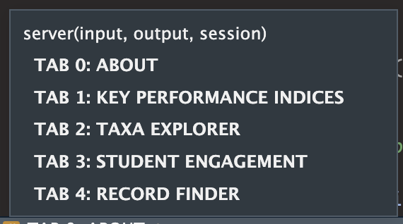

5 Server
In the server.R file we define the server side of the shiny app. The code is neatly commented so that you can navigate to the server code for each of the tab panels:

Before that though, we do some NB things:
5.1 Setup
1. Fetching Data:
Reactive expression (survey_data) fetches data based on the user-selected year (input$year) from a list of data frames (all_years_list). Here we subset the data for the year the user selects and store in a reactive dataframe. If you’re unfamiliar with reactive expressions, refer to the Master Shiny textbook! You can also look at the useful things section of this book, where I’ve provided some explanations of random shiny things.
The data frame corresponding to the selected year is stored in extract_df, and the reactive expression returns this subset of data. Now “survey_data” is a reactive dataset and is called throughout the shiny app likes its a function, i.e. “survey_data()”.
2. Taxa Names for Taxa Explorer:
This reactive expression (taxa_names) generates a sorted list of unique taxa names based on the currently selected survey data. We call the reactive dataset and then extrac and sort the unique entries in the Taxa column. The resulting reactive object taxa_names is then used to populate the dropdown menu in for the Taxa Explorer tab.
3. Student Names for Student Engagement:
student_names <- reactive({
survey_data() %>%
distinct(Observer, .keep_all = TRUE) %>%
drop_na(Observer) %>%
pull(Observer)
})Here we do the same thing as in the previous block but for the student names. A few extra things are done: any duplicate observer names and NA values. The result is a list of student names for populating the dropdown menu in the Student Engagement tab.
4. Updating Taxa and Student Selection:
In the follwoing blocks of code, we take the reactive objects taxa_names and student_names and we update the dropdown menus:
observeEvent(input$year,
{
if (input$year == "2022/2023") {
updateSelectInput(session, "taxa_select", choices = taxa_names(), selected = "Butterflies")
} else {
updateSelectInput(session, "taxa_select", choices = taxa_names())
}
},
ignoreNULL = FALSE
)If the selected year is “2022/2023,” it updates the choices in the taxa dropdown menu (taxa_select) with taxa_names() and sets the default selected value to “Butterflies.” Otherwise, it updates the choices without a default selection.
5.2 Valuebox Module
Let’s go through how the shiny module for the custom valuebox is created. Open the “valuebox_module.R” script in the Modules folder. I modified the code from this link and used this website as well. I mainly did this because I wnated more control over the appearance of the valueboxes. The standard valuebox from shinydashboard can only have select colors etc.
customValueBoxFunction:- Purpose: This function creates the HTML structure for a custom value box.
- Parameters:
value: The main value displayed in the value box.subtitle: Additional text displayed below the main value.icon: An optional icon to be displayed in the value box.color: Text color of the value box.background: Background color of the value box.width: Width of the value box (default is 4 columns in a 12-column grid).height: Height of the value box (default is “150px”).
- Functionality:
- The function constructs HTML elements using the provided parameters to create a custom value box.
- It uses the
shinydashboardpackage’s internaltagAssertfunction to assert that theiconis of type “i.” - The style is constructed based on the provided colors, width, and height.
- The
divfunction is used to create the structure of the value box, including the main value, subtitle, and optional icon.
# custom value box function
customValueBox <- function(value = NULL, subtitle = NULL, icon = NULL, color, background,
width = 4, height = "150px"){
if (!is.null(icon))
shinydashboard:::tagAssert(icon, type = "i")
style <- paste0("color: ", color, "; background-color: ", background, ";",
"width: ",width, ";", "height: ", height)
boxContent <- div(
class = "small-box", style = style,
div(
class = "inner",
h4(value),
p(subtitle)
),
if (!is.null(icon)) div(class = "icon-large", icon)
)
div(
class = if (!is.null(width)) paste0("col-sm-", width),
boxContent
)
}valuebox_serverFunction:- Purpose: This function serves as the server logic for the value box module.
- Parameters:
id: A unique identifier for the value box.- Other parameters are passed to the
customValueBoxfunction.
- Functionality:
- It uses the
moduleServerfunction to define a Shiny module. - The
renderValueBoxfunction is used to render the value box based on the inputs. - The
customValueBoxfunction is called with the provided parameters.
- It uses the
# valuebox module server function ---------------------------------------------
valuebox_server <- function(id, value, subtitle, icon, color, background,
width = 4, height = "150px"){
moduleServer(id, function(input, output, session){
output$vb <- renderValueBox({
customValueBox(
value = value,
subtitle = subtitle,
icon = icon,
background = background,
color = color,
width = width,
height = height
)
})
})
}- Usage Example:
- To use this module in a Shiny application, you would call the
valuebox_serverfunction in the server part of your Shiny app and usevalueBoxOutputin the UI part. - Example:
- To use this module in a Shiny application, you would call the
5.3 Tab About
Here the server side of the valueboxes that are in the Tab_About UI are made and we use the paragraphs from the Tab_About.R;
# from Tab_About.R
# Descriptions for server side valueboxes
# ABI score descriptions
par_s_h <- "Description of species and habitat score."
par_area <- "Description of area managed for biodiversity score"
par_engage <- "Description of biodiversity engagement score."
# BBI score descriptions
par_m_s <- "Description of mean species richness per hectare."
par_l_s <- "Description of local species richness per hectare."
par_fife <- "Description of Fife species richness per hectare."ABI Descriptions
output$S_H_about <- valuebox_server(
id = "S_H_about",
subtitle = paste(par_s_h),
value = "Species and Habitat Score",
background = "lightgray",
color = "black",
icon = NULL
) output$S_H_aboutis a Shiny output element using thevaluebox_serverfunction. It displays a box containing a title, subtitle, and value.id: A unique identifier for the box.subtitle: The text displayed below the title, extracted from a reactive variable (par_s_h).value: The main content of the box, indicating “Species and Habitat Score.”Other parameters set the background color, text color, and icon (none in this case).
More ABI Descriptions:
output$area_about <- valuebox_server(
id = "area_about",
subtitle = paste(par_l_s),
value = "Area Score",
background = "lightgray",
color = "black",
icon = NULL
)
output$engagement_about <- valuebox_server(
id = "engagement_about",
subtitle = paste(par_engage),
value = "Engagement Score",
background = "lightgray",
color = "black",
icon = NULL
)- Similar to the previous example, these
valuebox_serveroutputs display descriptions for different components of the Annual Biodiversity Index (ABI).
BBI Descriptions:
output$MS_about <- valuebox_server(
id = "MS_about",
subtitle = paste(par_m_s),
value = "Local species score per hectare",
background = "lightgray",
color = "black",
icon = NULL
)
output$fife_about <- valuebox_server(
id = "fife_about",
subtitle = paste(par_fife),
value = "Local species score per hectare",
background = "lightgray",
color = "black",
icon = NULL
)
output$local_about <- valuebox_server(
id = "local_about",
icon = NULL,
subtitle = paste(par_l_s),
value = "Local species score per hectare",
background = "lightgray",
color = "black"
)- These
valuebox_serveroutputs display descriptions for different components of the Benchmark Biodiversity Index (BBI).
Summary:
This server code defines logic to render images and display descriptions for the “About” tab of a Shiny application. The images include group photos, and the descriptions provide information about various biodiversity indices and scores. The data for these descriptions seems to come from reactive variables like par_s_h, par_l_s, par_engage, par_m_s, and par_fife.
5.4 Tab KPI
This R Shiny server code is associated with the “Key Performance Indices” tab (TAB 1). More valueboxes are created! And the server logic for the two graphs are created. The first one is always displayed, the second is only displayed when the year selected is not the first year.
ABI Plot (Bar Plot):
output$taxa_bar <- renderPlotly({
# Data manipulation to get species count per Taxa
df <- survey_data() %>%
group_by(Taxa) %>%
summarise(Count = n_distinct(Species))
# Plotting using ggplot2 and converting it to Plotly
ggplotly(
ggplot(df, aes(x = reorder(Taxa, -Count), y = Count)) +
geom_bar(stat = "identity", fill = "#028E9D", width = 0.2) +
labs(
x = "\nTaxa",
y = "Number of Species\n"
) +
theme_minimal() +
theme(
axis.text = element_text(size = 11),
axis.text.x = element_text(size = 10, angle = 45, vjust = 1, hjust = 1)
),
tooltip = "y"
)
})Within the
renderPlotlyfunction we group the data by taxa and count the number of unique species with tidyverse logic. This is then stored in an object calleddf. This occurs within the function, so it can only be used within the function.The
renderPlotlyfunction generates the plot based on the species count data and uses theggplotlyfunction to convert the ggplot2 plot to a Plotly interactive plot.
Example Plot for Change (CBI):
An example plot is provided for the Change Biodiversity Index (CBI). This plot is only shown when the selected year is not the first year (2022/2023).
output$example_plot <- output$species_bar <- renderPlotly({
# Example data for CBI plot
example_df <- data.frame(
Year = c("2022/2023", "2023/2024"),
CBI = c(100, 89)
)
# Creating a ggplot2 plot and converting it to Plotly
ggplotly(
ggplot(example_df, aes(x = Year, y = CBI)) +
geom_point(stat = "identity", colour = "#068D9D", size = 3) +
labs(
x = "\nYear",
y = "CBI\n"
) +
theme_light() +
theme(axis.text.x = element_text(size = 10, angle = 45, vjust = 1, hjust = 1)),
tooltip = c("y")
)
})This plot serves as an example for the Change Biodiversity Index, providing a visual representation of the CBI values across different years.
5.5 Tab Taxa Explorer
Using the reactive dataframe survey_data, we make a new reactive dataframe that is filtered for the selected taxa and selects certain columns:
# Create a reactive dataframe 'df' based on the selected taxa from the input.
# This dataframe filters the 'survey_data()' by the selected taxa and selects specific columns.
taxa_df <- reactive({
survey_data() %>%
filter(Taxa == input$taxa_select) %>%
select(Species, Count, Observer, Date, PhotoID, geometry)
})The new reactive daaframe taxa_df is then used throughout the server code for this tab.
This R Shiny server code is associated with the “Taxa Explorer” tab (TAB 2) in a Shiny application. The purpose of this tab is to explore details related to a specific taxonomic group (Taxa). Let’s break down the code:
Pie Chart (Species Distribution):
output$species_pie: Renders a pie chart showing the distribution of species for the selected taxa. The chart displays the top 10 species based on their count.
Value Boxes:
output$num_species_taxa: Renders a value box showing the number of distinct species for the selected taxa. The icon changes based on the selected taxa.- A mapping between taxa names and icons is created.
- When a taxa is selected in the Shiny application, it looks up the corresponding icon for that taxa from the icon_map.
- If there is no specific icon for the selected taxa, it defaults to using the “leaf” icon.
output$num_records_taxa: Renders a value box showing the total number of records for the selected taxa.output$top_obs: Renders a value box highlighting the top observer based on the number of records for the selected taxa.
Bar Graph of Species Records:
output$species_bar: Renders a bar graph showing the number of records for the top 50 species based on the count.
Data Tables:
output$taxa_table: Renders a data table displaying all records for the selected taxa.output$species_list: Renders a data table listing species and their respective number of records, sorted in descending order.The datatables use the
table_optionsdefined in global.R.
Leaflet Map:
output$MapPlot1: Renders a Leaflet map displaying the locations of species occurrences for the selected taxa.
Modal for Record Photo:
- Dynamically generates a modal UI for displaying the photo of a selected record when a row is selected in the data table. The modal includes an image and a close button. This could have been done with in built functions: https://shiny.posit.co/r/reference/shiny/1.7.3/modaldialog but I wanted more control over the functionality and the way images were displaying. The code runs JavaScript code using the
shinyjspackage. I used ChatGPT to help with code! The same logic is used for displaying a modal in the Student Engagement tab.
observeEvent(input$taxa_table_rows_selected, {...}):- This observer is triggered when the user selects a row in the data table with the id
taxa_table. input$taxa_table_rows_selectedcontains the indices of the selected rows.- The observer extracts the
PhotoIDassociated with the selected row from thetaxa_df()(assuming there is a reactive dataframe namedtaxa_df()). - If a valid
PhotoIDis found, it enables the modal, shows it, and sets the source (src) attribute of the image (modalImage_taxa) to the selected photo.
- This observer is triggered when the user selects a row in the data table with the id
output$Modal_taxa <- renderUI({...}):- This is a dynamic UI element for rendering the modal. It is a Fluid Page containing a div with the id
customModaland additional styling. - Inside the modal, there is another div (
modalContent) that contains anh4element with the title “Record Photo,” an image (modalImage_taxa), and a close button (closeModalBtn_taxa). - The
modalImage_taxahas a dynamic source (src) that will be set by the JavaScript code when a row is selected.
- This is a dynamic UI element for rendering the modal. It is a Fluid Page containing a div with the id
observeEvent(input$closeModalBtn_taxa, {...}):- This observer is triggered when the user clicks the “Close Modal” button.
- It runs JavaScript code to hide the modal (
$("#customModal").hide();).
In summary, when a user selects a row in the data table, the associated photo is displayed in a modal. The modal is dynamically generated with the renderUI function, and it includes an image and a button to close the modal. The JavaScript code (shinyjs::runjs) is used to control the display and hiding of the modal.
5.6 Tab Student Engagement
You’ll find a lot of similar code here, icnluding datatables, valueboxes, plotly plot and the custom modal. The first few lines of code are new though:
1. Student Heading
First, the student heading is created and dynamically changes based on which student is selected using input$student_select.
# Heading for the student engagement section
# This will dynamically display the name of the selected student followed by "Biodiversity Data"
output$student_heading <- renderText({
paste(input$student_select, "'s Biodiversity Data", sep = "")
})2. About me section
Then the “about_me” descriptions that the student wrote is pasted. If no paragraph is found, nothing ("") is displayed.
# Description for the student engagement section
# This fetches a description paragraph related to the selected student from the 'student_text_sep' dataset
output$student_description <- renderText({
# Get the selected student from the input
search_word <- input$student_select
# Find the index of the first occurrence of the selected student's name in student_text_sep
search_paragraph <- grep(search_word, student_text_sep)[1]
# Extract the relevant paragraph based on the found index
description <- student_text_sep[search_paragraph]
# If the student has not given a description, return a blank string
if (is.na(description)) {
description <- ""
} else {
description
}
})output$student_description <- renderText({ ... }): This sets up a reactive output element calledstudent_description. The content of this output is generated dynamically based on the selected student’s name.search_word <- input$student_select: It gets the selected student’s name from thestudent_selectinput.search_paragraph <- grep(search_word, student_text_sep)[1]: This finds the index of the first occurrence of the selected student’s name in thestudent_text_sepdataset. Thegrepfunction is used for pattern matching, and[1]is used to get the first match.description <- student_text_sep[search_paragraph]: This extracts the relevant paragraph from thestudent_text_sepdataset based on the found index.if (is.na(description)) { description <- "" } else { description }: This checks if the student has given a description. If the description is missing (NA), it setsdescriptionto an empty string. Otherwise, it leavesdescriptionunchanged.The final
descriptionvariable is then returned, and it will be displayed in the UI as the text content for the student engagement section. If the student has not provided a description, an empty string will be displayed.
3. Student Photo
# Display photo of the selected student
# This dynamically fetches the photo based on the selected student's name
output$photoOutput <- renderUI({
name <- input$student_select
# Check if a photo file exists for the selected student
if (file.exists(paste0("www/Team_Data/", name, ".jpg"))) {
# If a photo exists, create an HTML div with an img tag
photo <- tags$div(
tags$img(src = paste0("Team_Data/", name, ".jpg"), height = "100px", style = "margin-right: 10px; border-radius: 30px;")
)
} else {
# If no photo exists, create an HTML div with a user-secret icon
photo <- tags$div(
icon("user-secret", style = "margin-right: 10px; font-size: 50px")
)
}
# Return the created HTML div
photo
})output$photoOutput <- renderUI({ ... }): This sets up a reactive UI element calledphotoOutput. The content of this UI element is generated dynamically based on the selected student’s name.name <- input$student_select: It gets the selected student’s name from thestudent_selectinput.file.exists(paste0("www/Team_Data/", name, ".jpg")): This checks if a photo file exists for the selected student. It constructs the file path based on the name and checks if the file exists.If a photo exists (
ifbranch):photo <- tags$div(...)creates an HTML div element.tags$img(...)creates an img tag within the div, setting its source (srcattribute) to the path of the photo file.- Additional styling is applied with
height,styleattributes.
If no photo exists (
elsebranch):photo <- tags$div(...)creates an HTML div element.icon("user-secret", style = "margin-right: 10px; font-size: 50px")creates an icon with a user-secret icon from theshinypackage, providing additional styling.
photo: The final variablephotocontains the dynamically generated HTML content (either an image or an icon).The entire
photovariable is then returned, and this UI element will display either the photo of the selected student or a user-secret icon if no photo is found.
5.7 Tab Record Finder
observeEvent(input$viewButton, {
# Remove trailing space from PhotoID input
cleaned_photo_id <- str_trim(input$PhotoID, side = "right")
filename <- paste0("www/", cleaned_photo_id)
if (file.exists(filename)) {
output$imageOutput <- renderUI({
tags$div(
class = "record_image",
tags$img(src = paste(input$PhotoID), style = "display: block; max-width: 100%; max-height: 50vh"),
)
})
toggle("imageOutput")
}
})observeEvent(input$viewButton, {...}):- This observer is triggered when the button with the id
viewButtonis clicked.
- This observer is triggered when the button with the id
- Image Loading Logic:
cleaned_photo_id <- str_trim(input$PhotoID, side = "right"): Removes trailing spaces from the inputPhotoID.filename <- paste0("www/", cleaned_photo_id): Creates the file path for the image using the cleanedPhotoID.if (file.exists(filename)) { ... }: Checks if the file exists in the specified path.
- UI Rendering:
- If the file exists, it renders a dynamic UI (
output$imageOutput) containing an image (tags$img) with the source set to the specifiedPhotoID. The image is styled to have a maximum width of 100% and a maximum height of 50vh (50% of the viewport height). toggle("imageOutput"): This is likely a custom function to toggle the visibility of the image.
- If the file exists, it renders a dynamic UI (